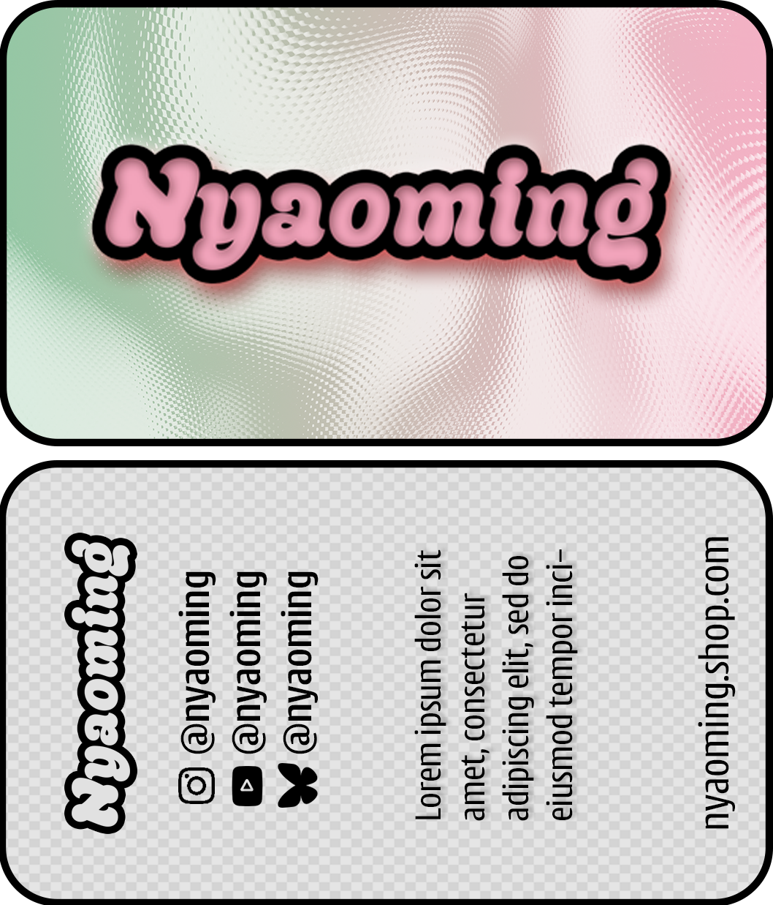
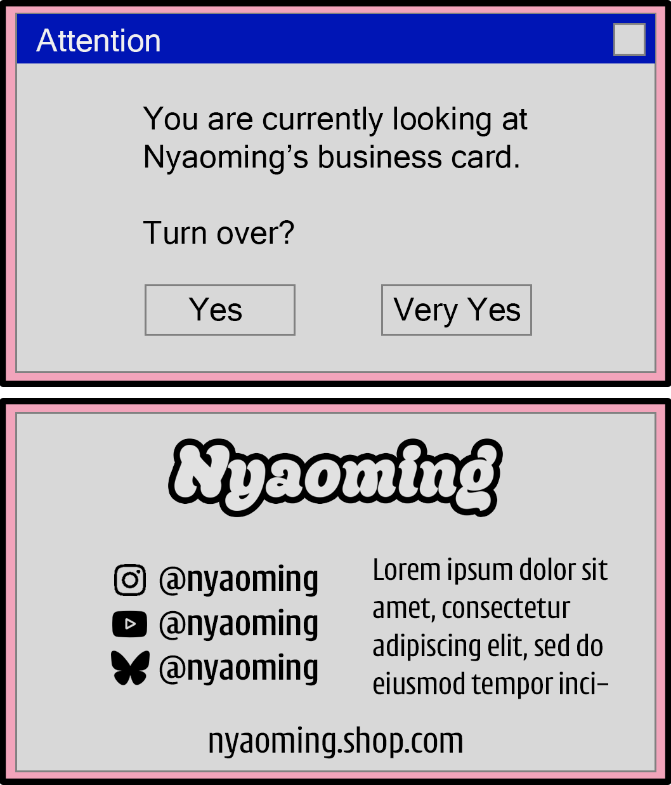
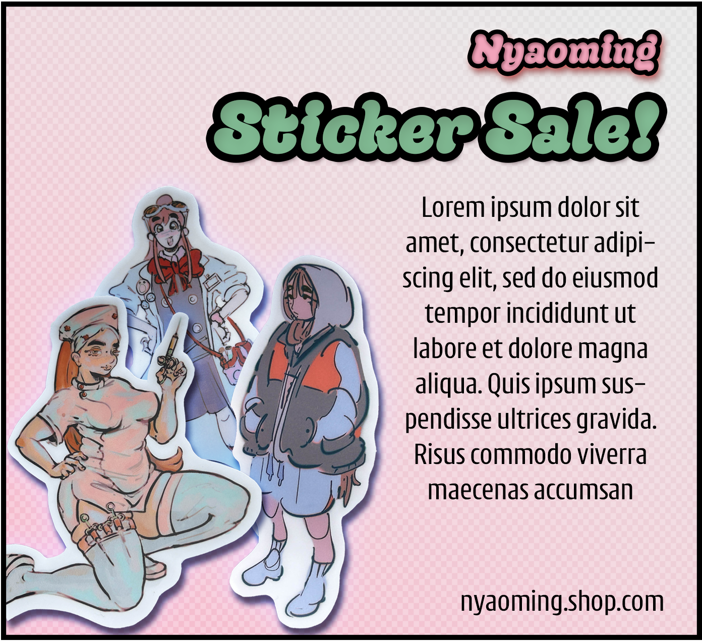
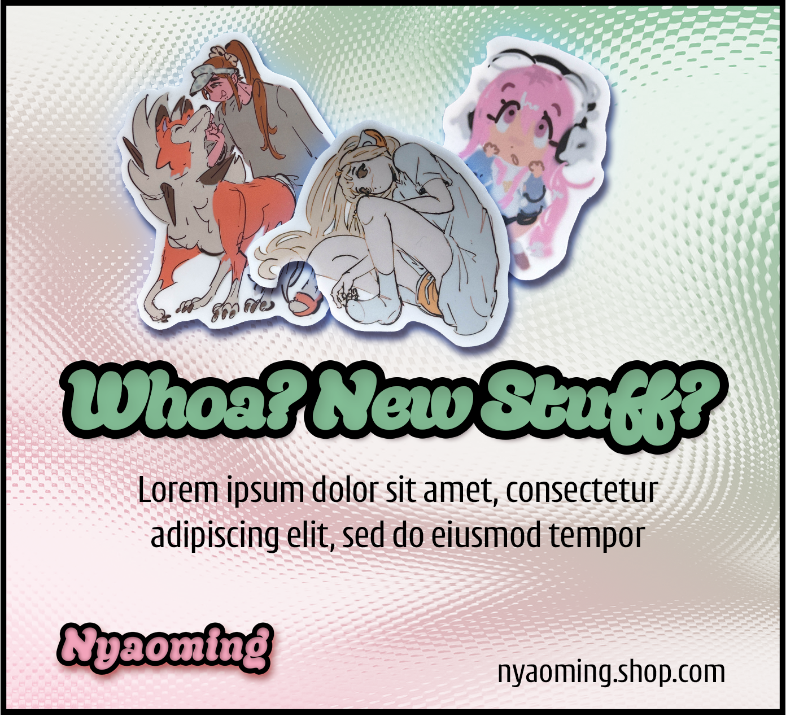
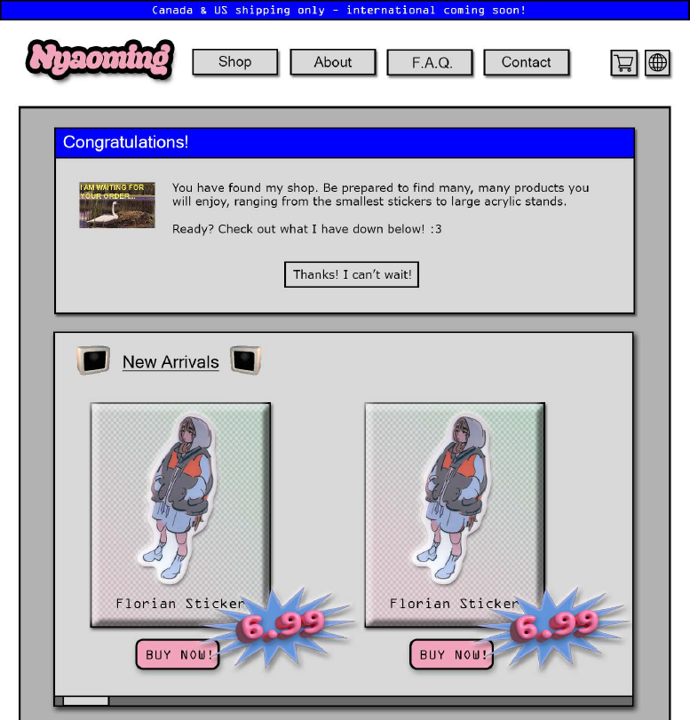

Nyaoming, my client, requested several pieces of branding and associated collatoral for her new business venture.
The requested pieces of collatoral include:
- Logo
- Background/Motifs
- Ads for Social Media
- Business Cards
- Website Mockup
Gallery





TAAFI is an organization that holds a conference every year for those in the animation industry. The conference features unique branding every year, so I had a lot of freedom to create something new that I felt fit the "TAAFI" image.
The collatoral I designed includes:
- Conference Information booklet
- Table About Pamphlet
- Badge Design
Gallery


Dutch Bros. Coffee is a chain of drive thru coffee stands with a relaxed and chill vibe. I performed a usability study of their website during May 2024, which gave me insight into some navigation issues. I then did a very slight resdesign of the website that addressed these issues without being too much work.
Comparison